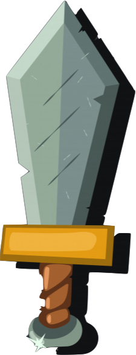
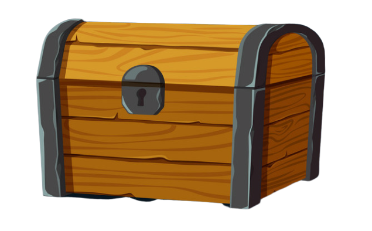

Generatore Di Tesori
Scegli uno dei seguenti generatori:

Oggetto Magico

Cumulo di Tesori
Tesoro Singolo
Puoi anche consultare la lista completa degli oggetti magici con descrizione cliccando
qui
.